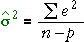
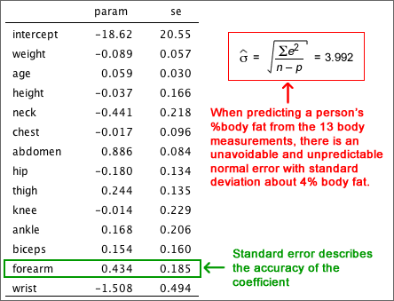

General linear model
The general linear model is
y = β0 + β1 x1 + β2 x2 + β3 x3 + ... + ε
where
ε ~ normal (0, σ)
Parameter estimates and standard errors
The best estimates of β0, β1, ... are the least squares estimates, b0, b1, ...
The best estimate of σ2 is the residual sum of squares, divided by its degrees of freedom,

where n is the number of observations and p is the number of β-parameters (i.e. the number of explanatory variables plus 1).
The least squares estimates, b0, b1, ... are random quantities and have distributions. The formulae for their standard errors are complex but statistical software will report their values.
Example
The equation below gives the least squares equation for predicting the percentage body fat of men, based on other body measurements.
The table below shows the standard errors of these coefficients and the estimate of the error standard deviation, σ.
